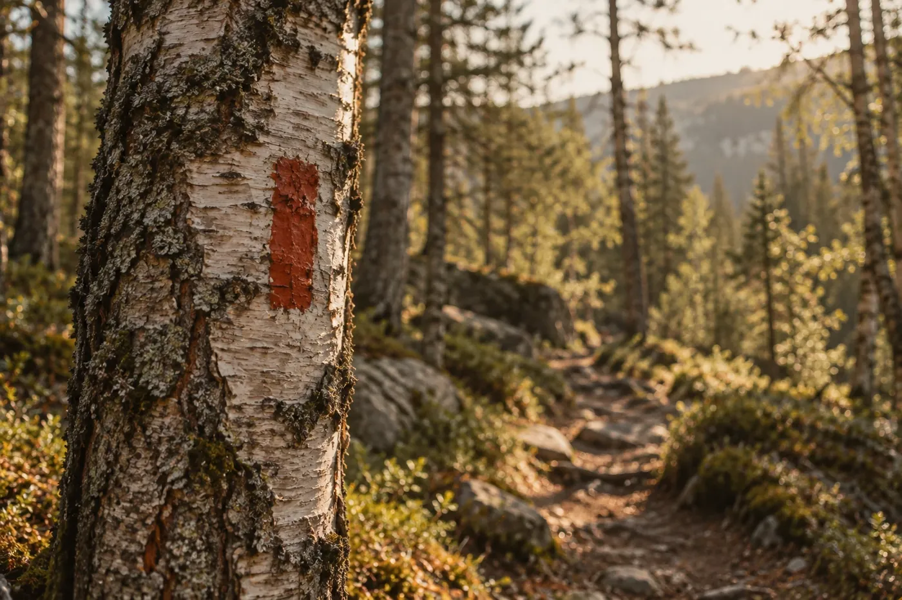

На туристических маршрутах путь отмечают краской на деревьях — простыми прямоугольными метками. Они не кричат, но им доверяешь: метка значит, что ты на верном пути.
Blaze — так по-английски называется такая метка. Бренд берёт на себя её роль: быть первой меткой на маршруте для тех, кто только начинает ходить в походы.

тёплая природа, кора и мох, метки краской, ткань и бирки. палитра: кора, метка, берёста, уголь
новички в туризме 20–45 лет, в основном городские жители: хотят выбраться на природу, но не знают, что брать и с чего начать
идут на выходные с друзьями, бюджет ограничен, боятся ошибиться со снаряжением
ценит качество и дизайн, выбирается в леса и парки, одежда нужна и в городе
важны надёжность и простота: собрать всех и ничего не забыть
что их беспокоит: не понимают, что брать · боятся переплатить · бренды для профи пугают · нужна вещь для леса и города
вещь, которой доверяешь на маршруте: технические материалы, проверенные швы, честные характеристики
без лишних вопросов: сами подскажем, что взять, и объясним, как работают слои одежды
о новичке и о природе: вещи на годы, уход и ремонт вместо «купил и выбросил»
живая человеческая подача вместо холодной техничности: бренд как друг, который идёт рядом
главная идея: метка на тропе — знак, которому доверяешь, что ты на верном пути
одежда и снаряжение для походов: от термобелья до палаток, с понятными описаниями
выбираете маршрут, сезон и опыт, сайт собирает комплект по слоям
код на бирке открывает состав, уход и подходящие маршруты
несколько размеров на выбор дома, лишнее возвращаете
пропитка мембраны, замена молний, советы по уходу за вещами
подборки лёгких маршрутов для новичков: на сайте и в печатном зине
две линии, которые дошли до знака: камни на тропе и метка на дереве
выбрана идея blaze: красная «l» осталась, а само слово потом перерисовано вручную
все метки собраны из одного модуля — красной буквы l
применение: навигация на сайте, упаковка, указатели в магазине, узор на носителях
Исследование · 18 страниц · конкуренты · аудитория · ценности · услуги · мудборд · референсы · нейминг · логотип
Мини-брендбук · 11 страниц · идея · логотип · версии · построение · цвета · типографика · система меток · носители · как нельзя